Videos showing how to use ChimeraX for various tasks. On other pages you can find tutorials with detailed written instructions and additional capabilities shown in web presentations and feature highlights and example images.
| 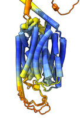 | SBGrid webinar AlphaFold for cryoEM Modeling and its Limitations. November 9, 2021. | ||
| 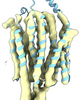 | Run AlphaFold to compute a starting cryoEM atomic model. Looks at transporter of omega-3 fatty acids. September 6, 2021. | 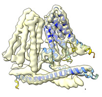 | Fit an AlphaFold database model into a cryoEM map. September 6, 2021. |
| 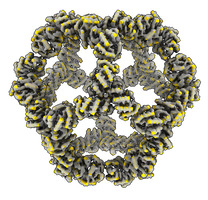 | Fit an atomic model into an electron microscopy map. Also use symmetry to build a full nanocage model. April 27, 2021. | 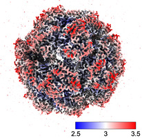 | Color an electron microscopy map by local resolution. April 14, 2021. |
| 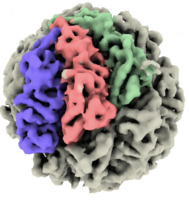 | Color each protein in an electron microscopy map. March 5, 2021. | 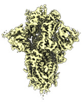 | Webinar intro to atomic models and X-ray and EM maps looking at SARS-CoV-2 nanobodies. Outline. March 25, 2021. |
| 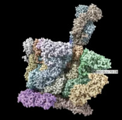 | Movie Making for cryoEM using ChimeraX SBGrid webinar. Written instructions. April 20, 2017. | 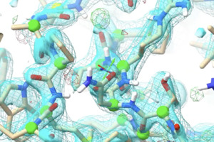 | Refining atomic models in cryoEM with ISOLDE SBGrid webinar presented by Tristan Croll. April 26, 2020. |
| 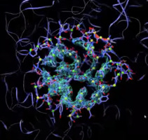 | Rebuilding a cryo-EM model using ISOLDE by Tristan Croll. January 22, 2019. |
| 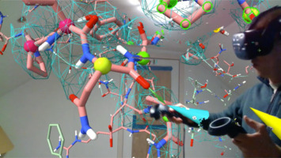 | Tugging atoms in ISOLDE atomic refinement tool. March 22, 2021. | 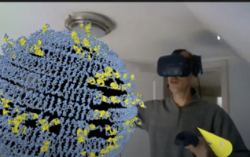 | Making Augmented Reality Videos with ChimeraX SBGrid webinar. Slides. July 19, 2020. |
| 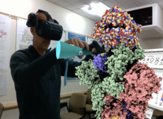 | How coronaviruses get into cells presented with augmented reality. February 3, 2020. | 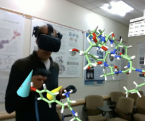 | Different kinds of opioids presented with augmented reality. November 20, 2019. |
| 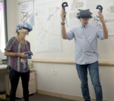 | Drug discovery with virtual reality Matt Jacobson and Beth Winger talk about use of VR to look at cancer drugs. October 16, 2019. | 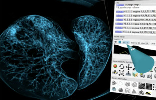 | Medical imaging virtual reality tutorial. Detailed instructions. February 2019. |
| 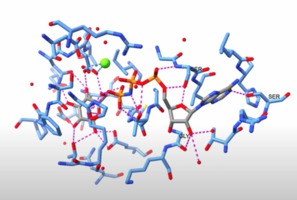 | Show residues near a ligand. January 5, 2022. | 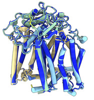 | Run AlphaFold to predict a complex. December 7, 2021. |
| 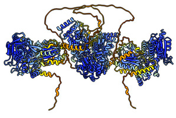 | Compare AlphaFold structure prediction to an experimental structure of nitric oxide synthase. September 1, 2021. | 
| Compute a protein structure from sequence using AlphaFold. Chicken avidin. September 1, 2021. |
| 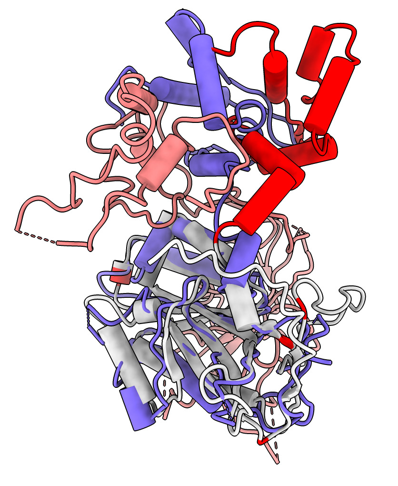 | Combine AlphaFold protein structures in an assembly and compare to an experimental human endonuclease complex. September 1, 2021. | 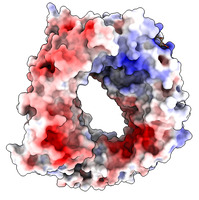 | Color by electrostatic potential nuclear export protein CRM1. April 21, 2021. |
Exporting Models | Wave function display | ||
| 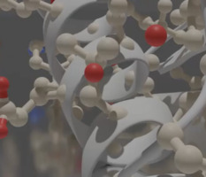 | Export models from ChimeraX into Blender by Brady Johnston. February 28, 2021. | 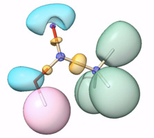 | Plotting electron localization function (ELF) isosurface from Multiwfn. January 29, 2020. |